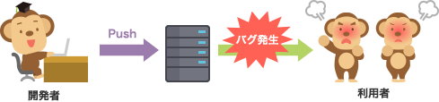
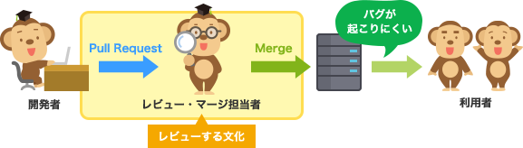

Pull Request
什麼是Pull Request？
大家的公司或團隊有在做Code Review嗎？Code Review的文化是否已經扎根了呢？要如何才能讓Code Review的文化扎根、將其變成日常任務呢？
即使訂下了「正式上線的原始碼一定要經過審核」這樣的規則，往往也會出現「太忙了沒空審核」「雖然想審核，但要找出哪裡改了很麻煩」等意見，結果就漸漸不再審核了。
要讓Code Review的文化在組織中扎根是非常困難的。但是，透過使用Pull Request，就能讓組織建立起Code Review的文化。
不使用Pull Request的開發流程

使用Pull Request的開發流程

簡單來說，Pull Request是一種將開發者在本機數據庫中所做的變更通知其他開發者的功能。Pull Request提供了以下功能：
- 將功能新增或修改等工作內容通知給審核、合併負責人及其他相關人員。
- 以容易理解的方式顯示原始碼的變更部分。
- 提供一個針對原始碼進行溝通交流的場所。
Note
Pull Request並非Git本身的功能，而是最初由GitHub所提供的功能。透過Pull Request，讓許多開發者更容易參與開放原始碼的開發，進而能夠產出高品質的程式碼。
現在幾乎所有主要的Git託管服務（GitHub、BitBucket等）和工具都可以使用此功能。